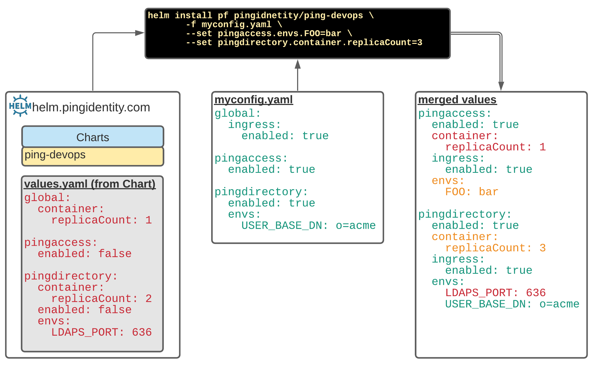

Introduction ¶
The charts make heavy use of Values yaml files to pass configuration details
to the Helm Charts. As defined by Helm Values Files, values are provided the chart using the following
mechanisms:
values.yamlfile in the chart- Value files passed to Helm during install/upgrade with the
-fflag - Individual parameters pass with the
--setflag
The list above is in order of specificity: values.yaml in the chart can be overridden
with -f supplied files, which can in turn be overridden with the --set parameter.
The example below shows how values from the chart, user supplied myconfig.yaml and --set parameters are merged with each other to form a merged values.

Chart Values ¶
To see the values supplied by the chart, simply use the helm show values command to
print them. This provides both the data as well as context sensitive comments to each
secion.
helm show values pingidentity/ping-devops
############################################################
# Ping Identity DevOps values.yaml
############################################################
# ...
You can also see all the available values via this values.yaml link
The default values are broken up into 2 major sections:
- global - Represents the base set of values that will be provided to each product section unless it's overridden in that section.
- product - For every image/product, the values will merged with the global seetings, and take precedenc.
Warning
Values can only be modified when merged. They cannot be deleted. Also, if a values is set to the boolean true, and merged with a boolean of false, it will always be true.
global Section ¶
The global: section of the values contains configurations that's available to each
products section. If a value is set in globals, that will be available to every prorduct.
This is very powerful, as you can turn on the ingress for every product by simply setting:
global:
ingress:
enabled: true
This would in essence set ingress.enabled=true for every product:
pingaccess:
ingress:
enabled: true
pingdirectory:
ingress:
enable: true
and so on.
Much easier to set something in global: section, rather an repeat it for each product.
Now, if you only wanted to enable the ingress for a couple of products, then you could
leave the default of global.ingress.enabled=false and just set that value for those
product sections.
product Sections ¶
Just like the global: values, each product can have the same values as well as many
more that are specific to that product/image. Take the following example in pingdirectory
where persistent volume information can be provided:
pingdirectory:
persistentvolume:
enabled: true
volumes:
- name: out-dir
mountPath: /opt/out
storage: 8Gi
storageClassName: